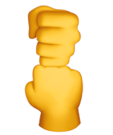

I was 7 years old, on a hot summer’s day, I had my hands clenched on the front gate of my grandmother’s house, I was standing there, with a bead of sweat on my forehead, waiting for my biological father to come pick me up. My uncle said “Want to play hide and seek?” I said “No thank you. I’m waiting for my father to come pick me up.”
I realized my father wasn’t going to be here. So I’m doing other stuff, when suddenly I saw my cousin sprinting, and he told me “Hey, Jovanny, sorry, I gotta go, my dad is taking me to play baseball.” I gave him my middle finger, but I knew it was wrong, so I covered it with my other hand. It looked like the picture below. And he fell for it. He said “Oh you too!” and he clumsily repeated my hand gesture, like he thought it was a friendly fist bump. I saw him enter his father’s car.

Suddenly my other cousin appeared, he wouldn’t stop talking to me, he was so happy and gay, it made me angrier. So I thought of a genius plan. I lured my cousin in between two blankets drying on a clothes line, so no one could see us, and like a tiger with my two hands I began choking his neck, face turning red, eyes protruding, veins popping out, just as he was one second away from death, I released his neck. Suddenly, all my anger dissapeared. Like one second I was a serial killer, and the next second I was back to normal happy cheery except I had amnesia.
So anyways I never knew why I was so angry. Until finally, I grew up, and I realized, the reason I was angry is because my father abandoned me, and meanwhile I was jealous of my cousin, because his parents were clearly more involved in his life.
Also, I realized I chocked my other cousin because I was unintentionally homophobic, because many years later he came out as a homosexual.
Obviously, as a kid, I had no clue about straight vs homosexual but...
For example, one time I was playing imaginary army, I pointed my invisible gun and yelled at my gay cousin “I need back up cover me!” and my gay cousin said “What do you mean cover you? Like with a blanket?” It made me so angry I grabbed his shirt and pushed him. His entire vibe was just different. That’s how I was unintentionally prejudice against him.